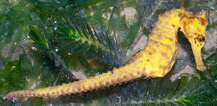
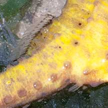
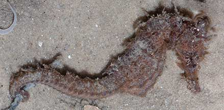
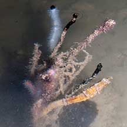
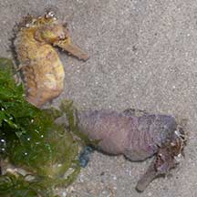

|
|
| fishes text index | photo index |
| Phylum Chordata > Subphylum Vertebrata > fishes > Family Syngnathidae > Genus Hippocampus |
| Estuarine
seahorse Hippocampus kuda Family Syngnathidae updated Oct 2020 Where seen? This seahorse is sometimes seen on many of our Northern shores, among seagrasses. According to the Singapore Red Data Book, it is found mainly in seagrass areas near sources of freshwater and found all around Singapore in shallow waters. 'Kuda' means 'horse' in Malay. Features: 6-10cm long. Body without large, obvious spines. Colours seen include yellow, brown, sometimes pinkish or even orangey. Some have spots on the body. Often seen in a pair near one another, not necessarily in the same colour: e.g,. one is bright yellow, the other is dark; brown or even black. Sometimes, very tiny ones only about 2cm long are seen among seaweeds. These tend to be 'hairy'. It's difficult to tell this seahorse apart from the Tiger-tailed seahorse (Hippocampus comes). More on how to tell apart the Tiger-tail and Estuarine seahorses. |
 Often seen in a pair. Tanah Merah, Aug 09 |
 Changi, Jul 07 |
 Often seen in a pair. Changi, May 05 |
 |
 |
 Small ones are 'hairy'. Changi, Dec 03 |
 Very well camouflaged! (Hint: it's the yellow one) Changi, Jun 11 |
| Pregnant fathers: Seahorses reproduce in a peculiar way. It is male that carries the eggs in his body and thus becomes 'pregnant'. The female lays her eggs in his pouch. Emerging from the eggs, the babies hatch as miniature seahorses and may remain in the pouch for a while before the father goes into 'labour' and ejects them out of the pouch. |
 Pregnant papa Pasir Ris Park, Jul 08 |
 Very pregnant papa. Changi, May 11 |
 A pair with a pregnant papa. Tanah Merah, Sep 09 |
| Status and threats: Seahorses are listed as CITES II (which means their international trade is monitored) and are considered globally vulnerable. Hippocampus kuda is listed as 'Vulnerable' on the Red List of threatened animals of Singapore. |
| Estuarine seahorses on Singapore shores |
On wildsingapore
flickr
|
| Other sightings on Singapore shores |
Links
References
|